1927
Семья Яшара начала торговлю красками в Измире.
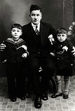Семья Яшара начала торговлю красками в Измире.
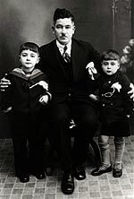Дурмуш Яшар запустил первое отечественное производство лакокрасочных материалов в Турции.
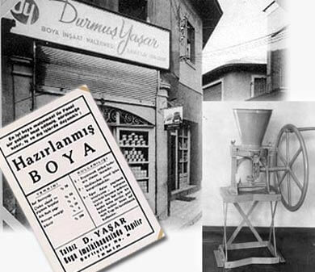Дурмуш Яшар, Сельчук Яшар и Осман Айдемир в своем магазине на рынке Шеритчилер в Измире.
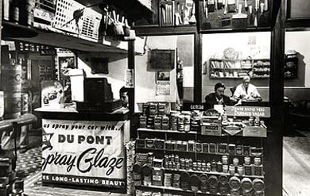Заложен фундамент завода строительных красок DYO. На церемонии присутствовала вся семья Яшар. Единство и вера превыше всего...
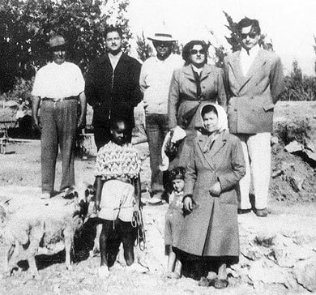24 декабря 1954 года состоялось открытие лакокрасочного завода DYO.
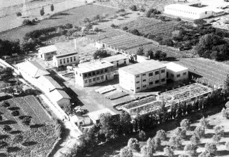Президент страны Джелял Баяр посетил лакокрасочный завод DYO.
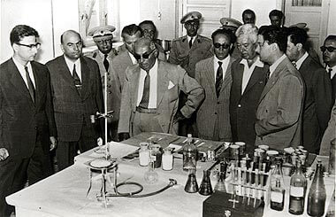Начало производства и экспорта смол стало первым шагом на международном рынке.
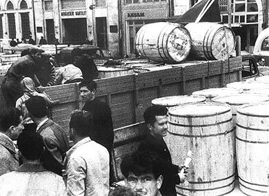Заложен фундамент завода “Dyosad”.
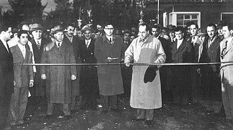Создана первая дилерская сеть в лакокрасочной отрасли.
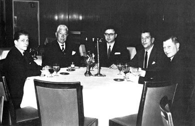Был проведен первый художественный конкурс частного сектора в Турции.
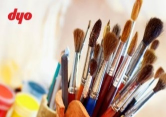Создана первая научно-исследовательская лаборатория.
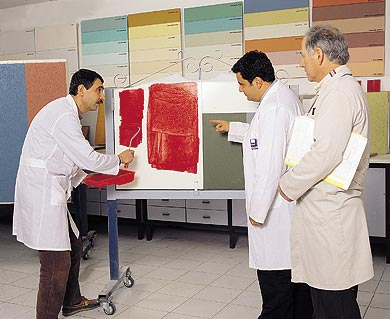Создан Фонд образования и культуры имени Яшара.
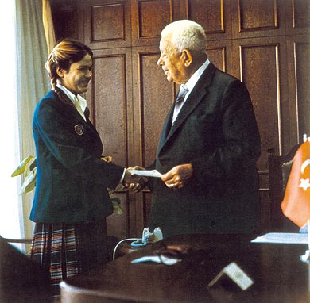Компания DYO совместно с дилерами создала компанию “Yasaş”(Ясаш).
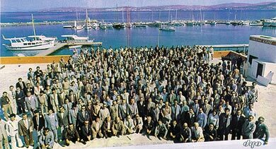Начало экспорта готовой лакокрасочной продукции.
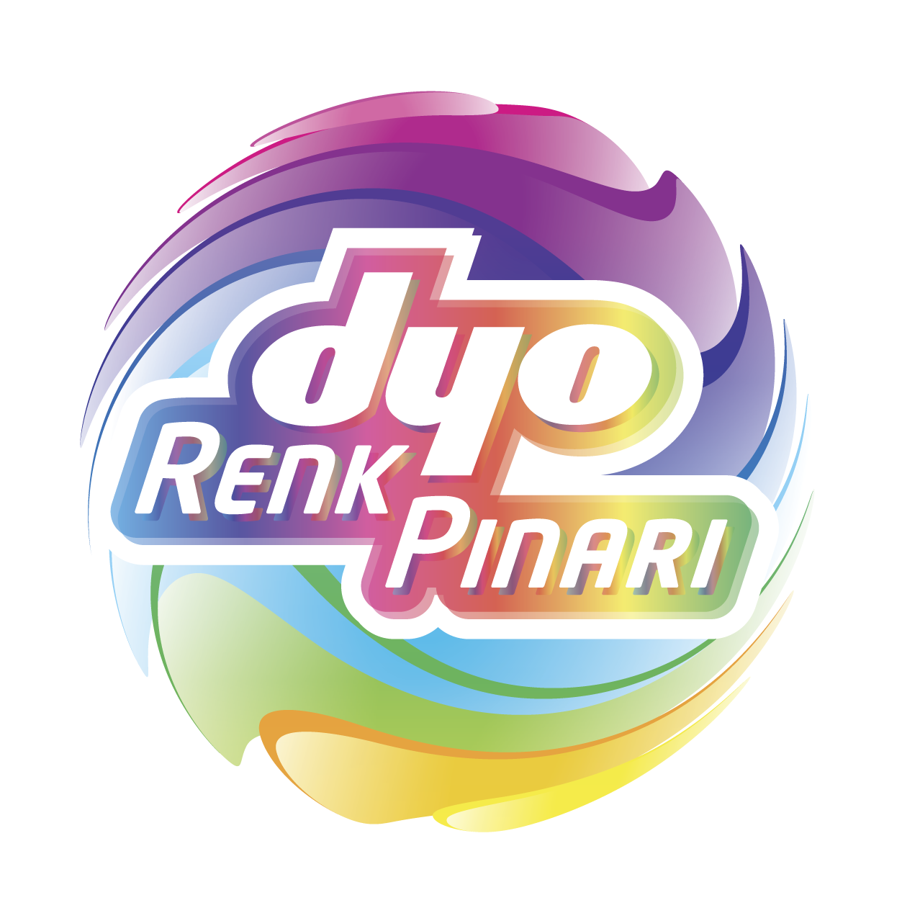Создана первая колеровочная система.
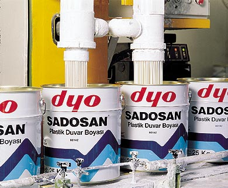Заложены основания завода “Ясаш” в Гебзе.
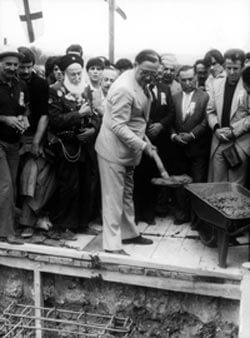Приобретение завода по производству лакокрасочных материалов и смол “Dewilux”.
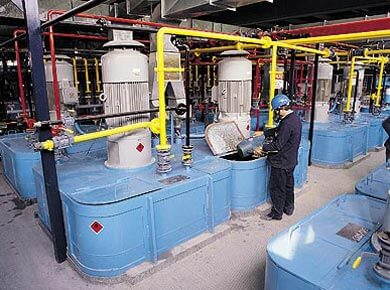Открыт завод “Ясаш” в Гебзе.
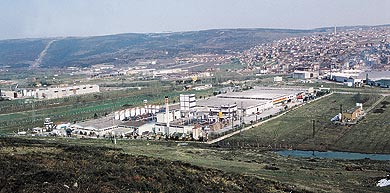Открылась художественная галерея имени Сельчука Яшара.
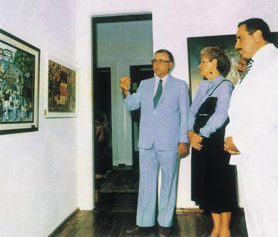Началась деятельность в России.
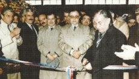Введены в эксплуатацию очистные сооружения.
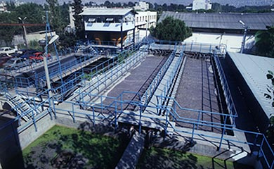Сельчук Яшар удостоен звания почетного доктора Университета имени Сулеймана Демиреля в Испарте.
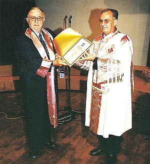Открытие индустриального профессионального лицея по малярному делу имени Сельчука Яшара.
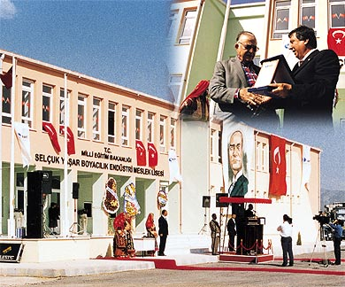Первый “Всемирный саммит производителей лакокрасочных материалов” прошел на Багамах. Из Турции была приглашена к участию только Группа лакокрасочных компаний “Яшар”.
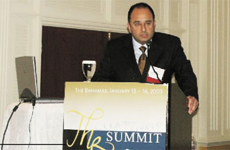Компания запустила на рынок первую фасадную краску с добавкой ПТФЭ, самоочищающуюся дождевой водой “Teknotex”.
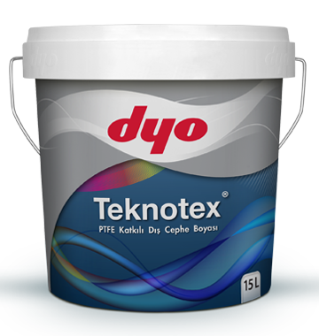Началась публикация журнала “Dyorum”.
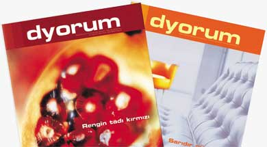Компания запустила первую нанотехнологичную краску, самоочищающуюся под воздействием света “Nanoipekmat”.
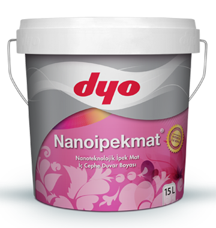Измирская товарная биржа была окрашена фасадной краской, самоочищающейся под воздействием света “Nanotex”.
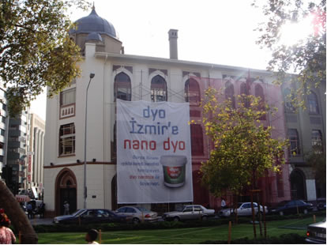Компания запустила на рынок силиконовую интерьерную краску “Dinamik”.
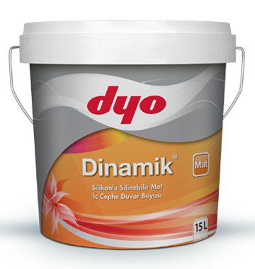Получение первого патента в лакокрасочной отрасли на нано краски Европейского Патентного Офиса(EPO).
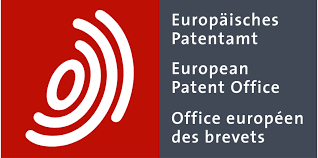В Диярбакыре была открыта начальная школа Фонда образования и культуры имени Яшара.
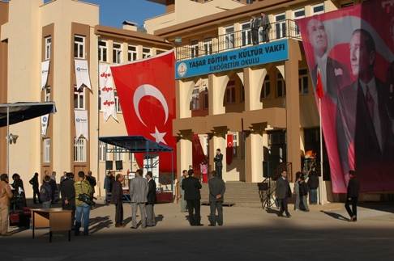DYO стала первой лакокрасочной компанией, получившей сертификат Центра по исследованию и разработке.
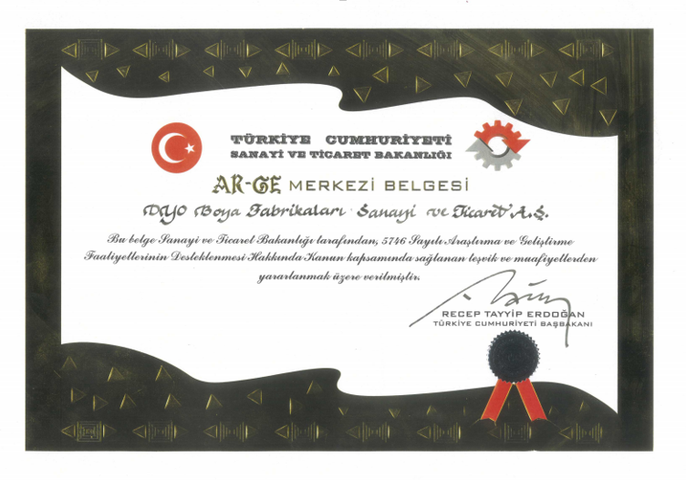Компания запустила на рынок первую краску, изготовленную по гибридной, технологи “Dyojen”.
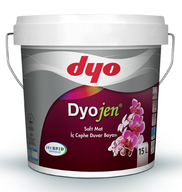Компания DYO получила Награду за Совершенство Эгейского района от Измирского филиала КалДер. Турецкая ассоциация качества вслед за получением сертификата EFQM “Признанное совершенство 5 звезд” в конкурсе “Награда за совершенство” Турции.
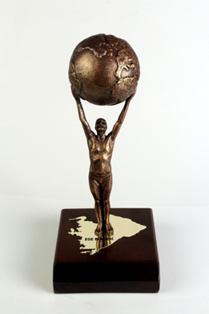Открытие завода по производству порошковых красок в Тургутлу (Маниса).
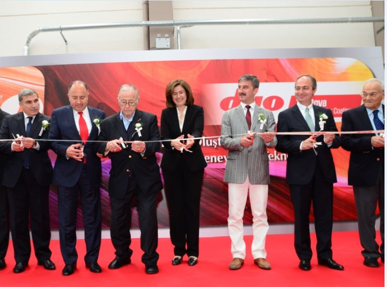Центр исследований и разработок DYO получил номинацию “Самый успешный центр исследований и разработок в химической отрасли”.
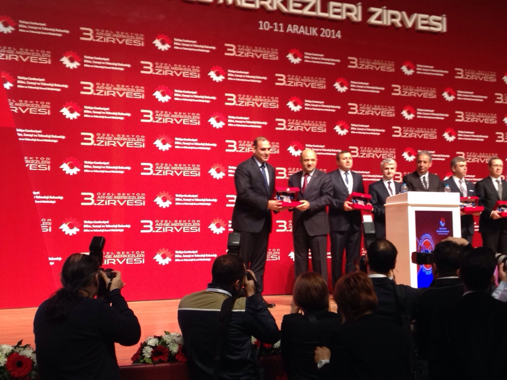Компания DYO стала обладателем приза EFQM за Совершенство Турции на съезде качества, организованном Турецкой ассоциацией качества (Kal-Der).

Компания DYO начинает осуществление проекта корпоративной социальной ответственности “Ценность завтрашнего дня”, который позволяет ей добавить ценности в жизнь людей.
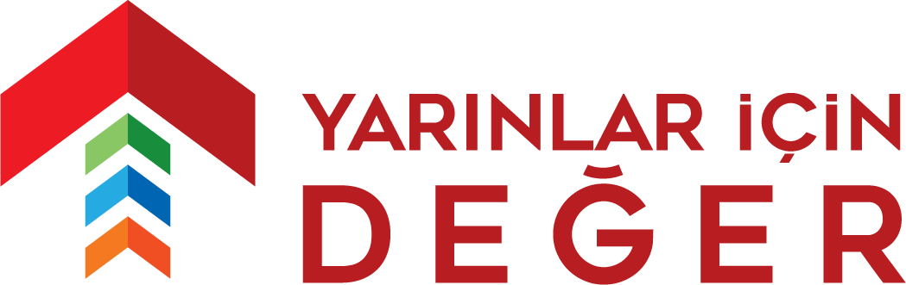Компания DYO подписала соглашение о сотрудничестве с Федерацией футбола Турции и вошла в число спонсоров национальной сборной по футболу.
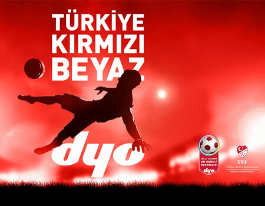Компания DYO начала революцию в области теплоизоляции 4.0 в Турции с брендом DYOTHERM.
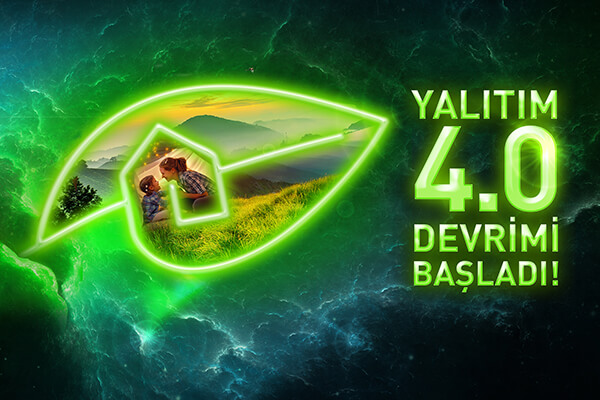DYO, первый турецкий лакокрасочный бренд, получивший сертификат EU Ecolabel и лицензию на право экологической маркировки продукции.
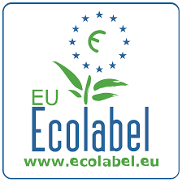На производственной базе DYO в Диловасы был создан центр исследований и разработок.
Премия Ассоциации производителей стройматериалов Турции ИМСАД “Инвестиции в будущее” была присуждена проекту “Ценность завтрашнего дня”
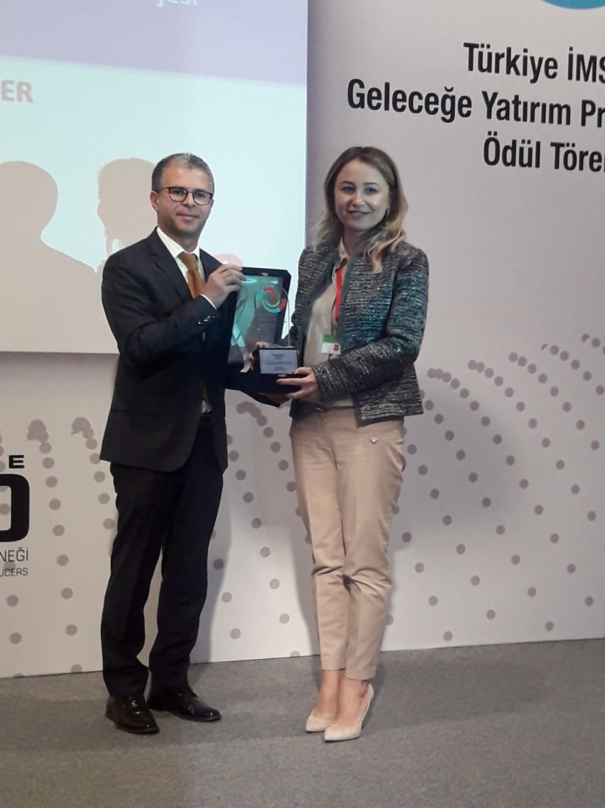DYOTHERM ISOLTECO 110 получил награду “Изоляционный продукт года” на конкурсе “За достижения в изоляционной отрасли”, организованном журналом “Yalıtım” (Изоляция).

Компания запустила на рынок первую краску, абсорбирующую формальдегид “Oxymax”.
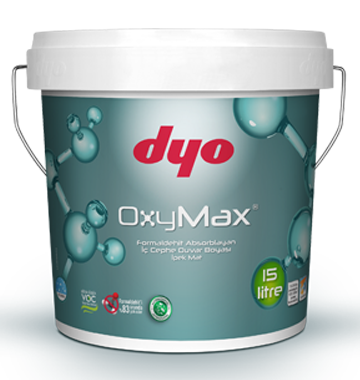Начало производства гибридной теплоизоляции нового поколения на заводе в Чигли и перемещение завода по производству порошковых покрытий на эту территорию. Благодаря новым инвестициям территория производственного комплекса в Чигли (Измир) достигла общей площади 124 000 m².
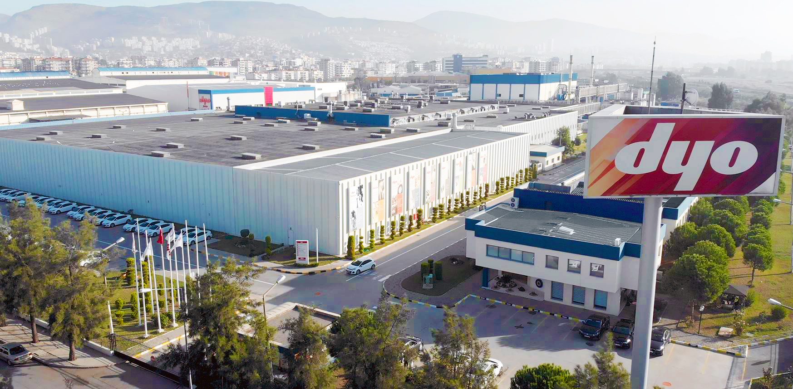В области морских красок DYO начала сотрудничество с базирующейся в Нидерландах международной ассоциацией “Transocean”, известной в мире под названием “Улыбающийся дельфин”.
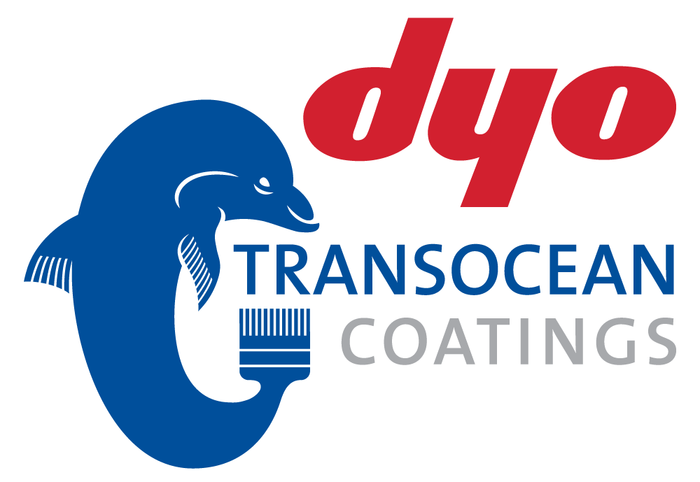DYO открыла новые горизонты и осуществила стратегическое сотрудничество с национальной оборонной промышленностью, получила сертификат стратегического делового партнерства (SIA).
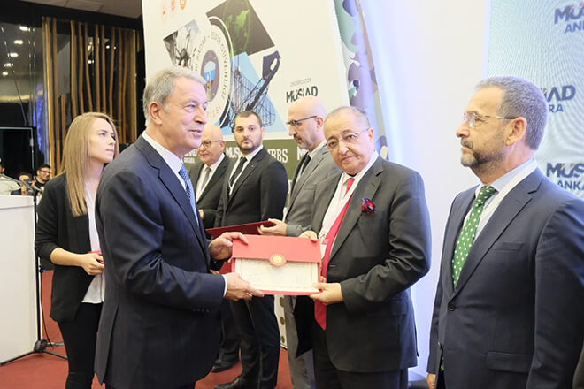Производственные предприятия компании DYO в Чигли и Диловаси получили “Сертификат безопасного производства TSE Covid-19”. Компания DYO стала первой компанией в лакокрасочной отрасли Турции, получившей этот сертификат.
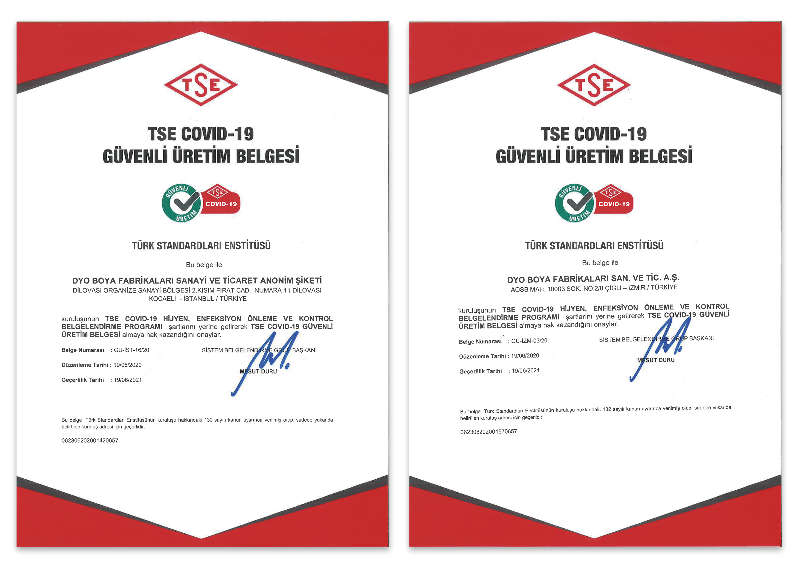